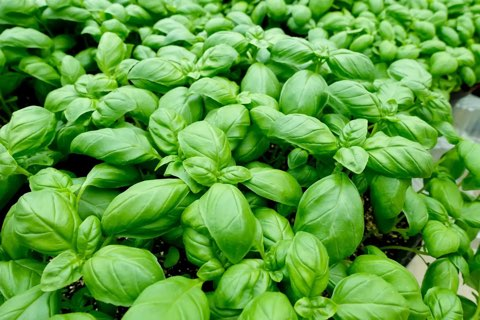

Basilic Frais
Notre basilic frais est cultivé avec soin pour offrir un parfum intense et des feuilles tendres, idéales pour rehausser vos plats d’été. Parfait pour les salades, les pestos ou en accompagnement de tomates et mozzarella.
Issu de l’agriculture biologique, il est récolté à la main chaque matin pour garantir sa fraîcheur et sa qualité. Un bouquet de saveurs méditerranéennes directement du jardin à votre table !
Caractéristiques
- Certifié Agriculture Biologique
- Récolté frais chaque matin
- Arôme puissant et naturel
- Feuilles tendres et savoureuses
- Idéal pour pesto, salades et plats méditerranéens
- Culture locale sans pesticide
Prix :
1,50€ / bouquet